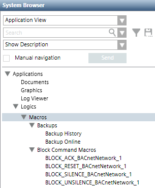
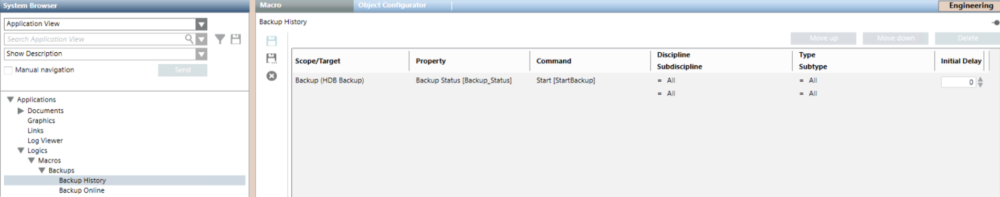

Macros Workspace
Macros are located under Applications > Logics > Macros in Application View of System Browser. They may be further organized into subfolders under the main Macros folder.

Macro Editor
In Engineering mode, when you select an existing Macro or start configuring a new one, the Macro tab displays. This contains the list of the Macro instructions.

Each macro instruction occupies one row, and comprises a set of fields (such as Scope/Target, Property, Command) defining a command that will be issued when that instruction is executed.
- The instructions of a macro are executed in order from top to bottom.
- To change the order of the instructions, select a row and click Move up or Move down.
- To delete an instruction, select its row and click Delete.
- The Move Up, Move Down, and Delete commands are also available in the right-click menu for each row.
- To add a new instruction (row), drag-and-drop the desired target object from System Browser into the empty area inside the Macro tab. The Manual navigation check box must be selected to do this.

Scaled and unscaled unit values
If a unit is associated to the selected target property and the command to execute requires a parameter affecting the property itself, it is important to always keep the same unit for the property. This is crucial since the unit used for the parameter is retrieved from the property, but not stored along with the macro; consequently, the parameter’s value changes its meaning if the property unit changes.
For example, given a target property unit kW and a macro configured to command the property using a parameter’s value equal to 1.5 kW, if the target property unit is changed to W after the macro configuration, the macro execution will set the property value to 1.5 W, while the original macro configuration was intended to set 1.5 kW.
Note that you can change the scaled unit of the target property if the unit remains the same, because the macro stores the unscaled unit value.
For example, a target property with kW unit and MW as scaled unit can be commanded in a macro using a parameter’s value equal to 0.3 MW ( = 300 kW). If the scaled unit is changed to W after the macro configuration, the macro will set the property value to 300000 W (= 300 kW).
Scope/Target
Defines the target objects that will be affected by this instruction. To set this field, do one of the following:
- To add a new instruction (row), drag-and-drop (link) one or many scopes (set of objects) or one or many objects from System Browser into the empty area inside the Macro tab. This creates a new row with its Scope/Target field set based on the linked scopes/objects.
- To change the scope/target of an existing instruction (row), drag-and-drop a one or many objects or one or many scopes (set of objects) from System Browser into the Scope/Target field of an existing row. In a distributed systems environment, objects can belong to any of the available systems.
To avoid unexpected behavior, in instructions whose target is a scope check that any scopes included in macro instructions will not interfere with the internal logics of the firmware control panels.
Prevent bad configuration
An instruction whose target is a scope containing objects having different units is considered bad configuration: when executing the instruction, the value used for the command parameter is applied to all the objects regardless of their unit.
When configuring a macro it is possible to show only one unit for each parameter. In case of properties with different units, only the first one can be displayed.
If a scope contains:
- An object whose commanded property unit is kW
- Another object whose commanded property unit is W
the value set as parameter is used for both objects. For example, 2 kW for the first object, 2 W for the second.
It is allowed to have targets with the same unit and different scaled unit.

The target object of an instruction can be another macro. Recursive loops are detected and not allowed.
If you need to change the System Browser view to find the target object/scope, select the Manual navigation check box first. This will let you switch to a different view (for example, Management View) while still retaining the Macro tab.
Property
Defines the property of the target objects that will be affected by the instruction. After you select a Scope/Target, the Property drop-down list refreshes to include all the properties of the target objects that have an associated command. The drop-down list will also include Undefined if the object model has a command that was configured with an Alias. To set this field:
- From the Property drop-down list, select the property of the Scope/Target objects that you want to control with this instruction.
The property that will be affected by the instruction displays using the notation property description [property name] regardless of whether the target object has an associated function.
Command
Defines the command that will be issued to the selected target property. After you select a Property, the Command drop-down list refreshes to include the available commands for changing that property (for example, Change[Write], Reset, or Disable). (If the property is Undefined, the drop-down list will include all the commands that have an Alias. More specifically, it will include only the commands configured as Generic Display in the object model.) To set this field:
- From the Command drop-down list, select the command you want to issue to modify the selected property of the target objects. If the selected target object was another macro, you can specify a command that enables, disables, executes, or aborts that macro.
- Specify any additional parameters (for example, a Value) required by the selected command.
To specify a static (constant) value, enter it directly (for example, type in a number) or select it (for example, from a drop-down list or date picker). Note that if the property is of GmsBitString type, the value you can enter can be numeric only (either integer or real; check in the Operation tab the number of bits allowed).
To set a value equal to that of another property, drag-and-drop (link) an object onto the Value field from System Browser. The Value field will display the first compatible property of the linked object (or remain blank if there are no compatible properties). If necessary, use the drop-down list to select a different property from the one that was selected automatically. Alternatively, you can link a specific property from the Operation tab, or link the event source from Event List (or from the Event Detail bar). If the object dropped (linked) onto the Value field has an associated function, it will display using the notation object description@function property description [property name].
Discipline/Subdiscipline and Type/Subtype
You can filter the target objects that will be affected by the instruction based on:
- Discipline/Subdiscipline (for example, Security/Video)
- Type/Subtype (for example, Detector/Automatic)
In this case the command will be applied to the scope/target objects that also match the specified filter criteria.
Initial Delay
Defines an initial delay (in seconds, 0 to 9999) before this individual macro instruction is executed.
Macro Toolbar
| Selection in System Browser [Engineering mode] | |
Macro object | Macros folder or subfolder | |
New | n.a. | Create a new subfolder under the currently selected one. |
Save | Save the changes made to the current macro. | n.a. |
Save As | Save the currently selected macro with a different name. You can use this to create a new macro from an existing one. | Create a new macro object. You must define at least one instruction before you can save. |
Delete | Delete the currently selected macro. | Delete the currently selected macros subfolder and any macros contained inside it. |